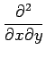

|
Bildung der ersten, zweiten, , n-ten partiellen Ableitung |
|  |
Bildung der zweiten partiellen Ableitung zunächst nach x, dann nach y |
|
erste, zweite, partielle Ableitung der Funktion f(x,y) |
| D |
Differentialoperator, z.B.: Dy=y', D2y=y'' |
|
Gradient eines skalaren Feldes |
|
Divergenz eines Vektorfeldes |
 |
Rotation eines Vektorfeldes |
|
Nablaoperator, hier in kartesischen Koordinaten (auch HAMILTONscher |
| |
Differentialoperator genannt, nicht zu verwechseln mit dem HAMILTON- |
| |
Operator der Quantenmechanik) |
 |
LAPLACE-Operator |
|
Richtungsableitung, d.h. Ableitung eines skalaren Feldes  nach der nach der |
| |
Richtung des Vektors |